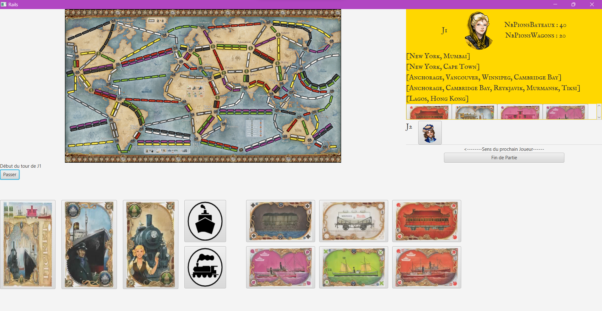

Les Aventuriers du rail
Ce projet, réalisé en première année de BUT consistait à développer un jeu de société appelé "Les aventuriers du Rail" en Java/JavaFX. En binôme, nous avons du développer ce jeu en deux parties : la première partie consistait à coder la mécanique du jeu en Java et vérifier qu'elles marchaient grâce à des test unitaires, et dans la deuxième partie nous avons du créer l'IHM du jeu en JavaFX en respectant les règles du jeu, soit bloquer les actions impossibles, avoir un log des actions effectuées, pouvoir choisir le nombre de joueurs au début de la partie, piocher des cartes...
Technologies utilisées
Java
JavaFX
Tests unitaires
Fonctionnalités
- Mécanique de jeu complète
- Interface graphique interactive
- Choix du nombre de joueurs
- Log des actions effectuées
- Gestion des règles et des actions impossibles